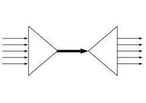

I/O 多路复用
目录
IO 多路复用是什么意思？
来源：罗志宇<知乎>：链接
假设你是一个机场的空管， 你需要管理到你机场的所有的航线， 包括进港，出港， 有些航班需要放到停机坪等待，有些航班需要去登机口接乘客。
你会怎么做?
最简单的做法，就是你去招一大批空管员，然后每人盯一架飞机， 从进港，接客，排位，出港，航线监控，直至交接给下一个空港，全程监控。
那么问题就来了：
- 很快你就发现空管塔里面聚集起来一大票的空管员，交通稍微繁忙一点，新的空管员就已经挤不进来了。
- 空管员之间需要协调，屋子里面就1, 2个人的时候还好，几十号人以后 ，基本上就成菜市场了。
- 空管员经常需要更新一些公用的东西，比如起飞显示屏，比如下一个小时后的出港排期，最后你会很惊奇的发现，每个人的时间最后都花在了抢这些资源上。
现实上我们的空管同时管几十架飞机稀松平常的事情， 他们怎么做的呢？
他们用这个东西这个东西叫flight progress strip. 每一个块代表一个航班，不同的槽代表不同的状态，然后一个空管员可以管理一组这样的块（一组航班），而他的工作，就是在航班信息有新的更新的时候，把对应的块放到不同的槽子里面。
这个东西现在还没有淘汰哦，只是变成电子的了而已。。
是不是觉得一下子效率高了很多，一个空管塔里可以调度的航线可以是前一种方法的几倍到几十倍。
如果你把每一个航线当成一个Sock(I/O 流), 空管当成你的服务端Sock管理代码的话.
第一种方法就是最传统的多进程并发模型 (每进来一个新的I/O流会分配一个新的进程管理。)
第二种方法就是I/O多路复用 (单个线程，通过记录跟踪每个I/O流(sock)的状态，来同时管理多个I/O流 。)其实“I/O多路复用”这个坑爹翻译可能是这个概念在中文里面如此难理解的原因。所谓的I/O多路复用在英文中其实叫 I/O multiplexing. 如果你搜索multiplexing啥意思，基本上都会出这个图：

于是大部分人都直接联想到”一根网线，多个sock复用” 这个概念，包括上面的几个回答， 其实不管你用多进程还是I/O多路复用， 网线都只有一根好伐。多个Sock复用一根网线这个功能是在内核＋驱动层实现的。
重要的事情再说一遍： I/O multiplexing 这里面的 multiplexing 指的其实是在单个线程通过记录跟踪每一个Sock(I/O流)的状态(对应空管塔里面的Fight progress strip槽)来同时管理多个I/O流
. 发明它的原因，是尽量多的提高服务器的吞吐能力。
是不是听起来好拗口，看个图就懂了.
在同一个线程里面， 通过拨开关的方式，来同时传输多个I/O流， (学过EE的人现在可以站出来义正严辞说这个叫“时分复用”了）。
什么，你还没有搞懂“一个请求到来了，nginx使用epoll接收请求的过程是怎样的”， 多看看这个图就了解了。提醒下，ngnix会有很多链接进来， epoll会把他们都监视起来，然后像拨开关一样，谁有数据就拨向谁，然后调用相应的代码处理。
－－－－－－－－－－－－－－－－－－－－－－－－－－－－－－－－－－－－－－－－－－
了解这个基本的概念以后，其他的就很好解释了。select, poll, epoll 都是I/O多路复用的具体的实现，之所以有这三个鬼存在，其实是他们出现是有先后顺序的。
I/O多路复用这个概念被提出来以后， select是第一个实现 (1983 左右在BSD里面实现的)。
select 被实现以后，很快就暴露出了很多问题。
- select 会修改传入的参数数组，这个对于一个需要调用很多次的函数，是非常不友好的。
- select 如果任何一个sock(I/O stream)出现了数据，select 仅仅会返回，但是并不会告诉你是那个sock上有数据，于是你只能自己一个一个的找，10几个sock可能还好，要是几万的sock每次都找一遍，这个无谓的开销就颇有海天盛筵的豪气了。
- select 只能监视1024个链接， 这个跟草榴没啥关系哦，linux 定义在头文件中的，参见FD_SETSIZE。
- select 不是线程安全的，如果你把一个sock加入到select, 然后突然另外一个线程发现，尼玛，这个sock不用，要收回。对不起，这个select 不支持的，如果你丧心病狂的竟然关掉这个sock, select的标准行为是。。呃。。不可预测的， 这个可是写在文档中的哦.
“If a file descriptor being monitored by select() is closed in another thread, the result is unspecified”
霸不霸气于是14年以后(1997年）一帮人又实现了poll, poll 修复了select的很多问题，比如
- poll 去掉了1024个链接的限制，于是要多少链接呢， 主人你开心就好。
- poll 从设计上来说，不再修改传入数组，不过这个要看你的平台了，所以行走江湖，还是小心为妙。
其实拖14年那么久也不是效率问题， 而是那个时代的硬件实在太弱，一台服务器处理1千多个链接简直就是神一样的存在了，select很长段时间已经满足需求。
但是poll仍然不是线程安全的， 这就意味着，不管服务器有多强悍，你也只能在一个线程里面处理一组I/O流。你当然可以那多进程来配合了，不过然后你就有了多进程的各种问题。
于是5年以后, 在2002, 大神 Davide Libenzi 实现了epoll.
epoll 可以说是I/O 多路复用最新的一个实现，epoll 修复了poll 和select绝大部分问题, 比如：
- epoll 现在是线程安全的。
- epoll 现在不仅告诉你sock组里面数据，还会告诉你具体哪个sock有数据，你不用自己去找了。
epoll 当年的patch，现在还在，下面链接可以看得到：
/dev/epoll Home Page贴一张霸气的图，看看当年神一样的性能（测试代码都是死链了， 如果有人可以刨坟找出来，可以研究下细节怎么测的).
横轴Dead connections 就是链接数的意思，叫这个名字只是它的测试工具叫deadcon. 纵轴是每秒处理请求的数量，你可以看到，epoll每秒处理请求的数量基本不会随着链接变多而下降的。poll 和/dev/poll 就很惨了。
可是epoll 有个致命的缺点。。只有linux支持。比如BSD上面对应的实现是kqueue。
其实有些国内知名厂商把epoll从安卓里面裁掉这种脑残的事情我会主动告诉你嘛。什么，你说没人用安卓做服务器，尼玛你是看不起p2p软件了啦。
而ngnix 的设计原则里面， 它会使用目标平台上面最高效的I/O多路复用模型咯，所以才会有这个设置。一般情况下，如果可能的话，尽量都用epoll/kqueue吧。
详细的在这里:
Connection processing methodsPS: 上面所有这些比较分析，都建立在大并发下面，如果你的并发数太少，用哪个，其实都没有区别。 如果像是在欧朋数据中心里面的转码服务器那种动不动就是几万几十万的并发，不用epoll我可以直接去撞墙了。
几种高性能IO模型浅析
来源：白小狮
服务器端编程经常需要构造高性能的IO模型，常见的IO模型有四种：
（1）同步阻塞IO（Blocking IO）：即传统的IO模型。
（2）同步非阻塞IO（Non-blocking IO）：默认创建的socket都是阻塞的，非阻塞IO要求socket被设置为NONBLOCK。注意这里所说的NIO并非Java的NIO（New IO）库。
（3）IO多路复用（IO Multiplexing）：即经典的Reactor设计模式，有时也称为异步阻塞IO，Java中的Selector和Linux中的epoll都是这种模型。
（4）异步IO（Asynchronous IO）：即经典的Proactor设计模式，也称为异步非阻塞IO。
同步和异步的概念描述的是用户线程与内核的交互方式：同步是指用户线程发起IO请求后需要等待或者轮询内核IO操作完成后才能继续执行；而异步是指用户线程发起IO请求后仍继续执行，当内核IO操作完成后会通知用户线程，或者调用用户线程注册的回调函数。
阻塞和非阻塞的概念描述的是用户线程调用内核IO操作的方式：阻塞是指IO操作需要彻底完成后才返回到用户空间；而非阻塞是指IO操作被调用后立即返回给用户一个状态值，无需等到IO操作彻底完成。
另外，Richard Stevens 在《Unix 网络编程》卷1中提到的基于信号驱动的IO（Signal Driven IO）模型，由于该模型并不常用，本文不作涉及。接下来，我们详细分析四种常见的IO模型的实现原理。为了方便描述，我们统一使用IO的读操作作为示例。
一、同步阻塞IO
同步阻塞IO模型是最简单的IO模型，用户线程在内核进行IO操作时被阻塞。
图1 同步阻塞IO
如图1所示，用户线程通过系统调用read发起IO读操作，由用户空间转到内核空间。内核等到数据包到达后，然后将接收的数据拷贝到用户空间，完成read操作。
用户线程使用同步阻塞IO模型的伪代码描述为：
1 | { |
即用户需要等待read将socket中的数据读取到buffer后，才继续处理接收的数据。整个IO请求的过程中，用户线程是被阻塞的，这导致用户在发起IO请求时，不能做任何事情，对CPU的资源利用率不够。
二、同步非阻塞IO
同步非阻塞IO是在同步阻塞IO的基础上，将socket设置为NONBLOCK。这样做用户线程可以在发起IO请求后可以立即返回。
如图2所示，由于socket是非阻塞的方式，因此用户线程发起IO请求时立即返回。但并未读取到任何数据，用户线程需要不断地发起IO请求，直到数据到达后，才真正读取到数据，继续执行。
用户线程使用同步非阻塞IO模型的伪代码描述为：
1 | { |
即用户需要不断地调用read，尝试读取socket中的数据，直到读取成功后，才继续处理接收的数据。整个IO请求的过程中，虽然用户线程每次发起IO请求后可以立即返回，但是为了等到数据，仍需要不断地轮询、重复请求，消耗了大量的CPU的资源。一般很少直接使用这种模型，而是在其他IO模型中使用非阻塞IO这一特性。
三、IO多路复用
IO多路复用模型是建立在内核提供的多路分离函数select基础之上的，使用select函数可以避免同步非阻塞IO模型中轮询等待的问题。
图3 多路分离函数select
如图3所示，用户首先将需要进行IO操作的socket添加到select中，然后阻塞等待select系统调用返回。当数据到达时，socket被激活，select函数返回。用户线程正式发起read请求，读取数据并继续执行。
从流程上来看，使用select函数进行IO请求和同步阻塞模型没有太大的区别，甚至还多了添加监视socket，以及调用select函数的额外操作，效率更差。但是，使用select以后最大的优势是用户可以在一个线程内同时处理多个socket的IO请求。用户可以注册多个socket，然后不断地调用select读取被激活的socket，即可达到在同一个线程内同时处理多个IO请求的目的。而在同步阻塞模型中，必须通过多线程的方式才能达到这个目的。
用户线程使用select函数的伪代码描述为：1
2
3
4
5
6
7
8
9
10
11
12
13{
select(socket);
while(1) {
sockets = select();
for(socket in sockets) {
if(can_read(socket)) {
read(socket, buffer);
process(buffer);
}
}
}
}
其中while循环前将socket添加到select监视中，然后在while内一直调用select获取被激活的socket，一旦socket可读，便调用read函数将socket中的数据读取出来。
然而，使用select函数的优点并不仅限于此。虽然上述方式允许单线程内处理多个IO请求，但是每个IO请求的过程还是阻塞的（在select函数上阻塞），平均时间甚至比同步阻塞IO模型还要长。如果用户线程只注册自己感兴趣的socket或者IO请求，然后去做自己的事情，等到数据到来时再进行处理，则可以提高CPU的利用率。
IO多路复用模型使用了Reactor设计模式实现了这一机制。
图4 Reactor设计模式
如图4所示，EventHandler抽象类表示IO事件处理器，它拥有IO文件句柄Handle（通过get_handle获取），以及对Handle的操作handle_event（读/写等）。继承于EventHandler的子类可以对事件处理器的行为进行定制。Reactor类用于管理EventHandler（注册、删除等），并使用handle_events实现事件循环，不断调用同步事件多路分离器（一般是内核）的多路分离函数select，只要某个文件句柄被激活（可读/写等），select就返回（阻塞），handle_events就会调用与文件句柄关联的事件处理器的handle_event进行相关操作。

图5 IO多路复用
如图5所示，通过Reactor的方式，可以将用户线程轮询IO操作状态的工作统一交给handle_events事件循环进行处理。用户线程注册事件处理器之后可以继续执行做其他的工作（异步），而Reactor线程负责调用内核的select函数检查socket状态。当有socket被激活时，则通知相应的用户线程（或执行用户线程的回调函数），执行handle_event进行数据读取、处理的工作。由于select函数是阻塞的，因此多路IO复用模型也被称为异步阻塞IO模型。注意，这里的所说的阻塞是指select函数执行时线程被阻塞，而不是指socket。一般在使用IO多路复用模型时，socket都是设置为NONBLOCK的，不过这并不会产生影响，因为用户发起IO请求时，数据已经到达了，用户线程一定不会被阻塞。
用户线程使用IO多路复用模型的伪代码描述为：1
2
3
4
5
6
7
8
9
10void UserEventHandler::handle_event() {
if(can_read(socket)) {
read(socket, buffer);
process(buffer);
}
}
{
Reactor.register(new UserEventHandler(socket));
}
用户需要重写EventHandler的handle_event函数进行读取数据、处理数据的工作，用户线程只需要将自己的EventHandler注册到Reactor即可。Reactor中handle_events事件循环的伪代码大致如下。1
2
3
4
5
6
7
8Reactor::handle_events() {
while(1) {
sockets = select();
for(socket in sockets) {
get_event_handler(socket).handle_event();
}
}
}
事件循环不断地调用select获取被激活的socket，然后根据获取socket对应的EventHandler，执行器handle_event函数即可。
IO多路复用是最常使用的IO模型，但是其异步程度还不够“彻底”，因为它使用了会阻塞线程的select系统调用。因此IO多路复用只能称为异步阻塞IO，而非真正的异步IO。
四、异步IO
“真正”的异步IO需要操作系统更强的支持。在IO多路复用模型中，事件循环将文件句柄的状态事件通知给用户线程，由用户线程自行读取数据、处理数据。而在异步IO模型中，当用户线程收到通知时，数据已经被内核读取完毕，并放在了用户线程指定的缓冲区内，内核在IO完成后通知用户线程直接使用即可。
异步IO模型使用了Proactor设计模式实现了这一机制。

图6 Proactor设计模式
如图6，Proactor模式和Reactor模式在结构上比较相似，不过在用户（Client）使用方式上差别较大。Reactor模式中，用户线程通过向Reactor对象注册感兴趣的事件监听，然后事件触发时调用事件处理函数。而Proactor模式中，用户线程将AsynchronousOperation（读/写等）、Proactor以及操作完成时的CompletionHandler注册到AsynchronousOperationProcessor。AsynchronousOperationProcessor使用Facade模式提供了一组异步操作API（读/写等）供用户使用，当用户线程调用异步API后，便继续执行自己的任务。AsynchronousOperationProcessor 会开启独立的内核线程执行异步操作，实现真正的异步。当异步IO操作完成时，AsynchronousOperationProcessor将用户线程与AsynchronousOperation一起注册的Proactor和CompletionHandler取出，然后将CompletionHandler与IO操作的结果数据一起转发给Proactor，Proactor负责回调每一个异步操作的事件完成处理函数handle_event。虽然Proactor模式中每个异步操作都可以绑定一个Proactor对象，但是一般在操作系统中，Proactor被实现为Singleton模式，以便于集中化分发操作完成事件。
图7 异步IO
如图7所示，异步IO模型中，用户线程直接使用内核提供的异步IO API发起read请求，且发起后立即返回，继续执行用户线程代码。不过此时用户线程已经将调用的AsynchronousOperation和CompletionHandler注册到内核，然后操作系统开启独立的内核线程去处理IO操作。当read请求的数据到达时，由内核负责读取socket中的数据，并写入用户指定的缓冲区中。最后内核将read的数据和用户线程注册的CompletionHandler分发给内部Proactor，Proactor将IO完成的信息通知给用户线程（一般通过调用用户线程注册的完成事件处理函数），完成异步IO。
用户线程使用异步IO模型的伪代码描述为：1
2
3
4
5
6
7void UserCompletionHandler::handle_event(buffer) {
process(buffer);
}
{
aio_read(socket, new UserCompletionHandler);
}
用户需要重写CompletionHandler的handle_event函数进行处理数据的工作，参数buffer表示Proactor已经准备好的数据，用户线程直接调用内核提供的异步IO API，并将重写的CompletionHandler注册即可。
相比于IO多路复用模型，异步IO并不十分常用，不少高性能并发服务程序使用IO多路复用模型+多线程任务处理的架构基本可以满足需求。况且目前操作系统对异步IO的支持并非特别完善，更多的是采用IO多路复用模型模拟异步IO的方式（IO事件触发时不直接通知用户线程，而是将数据读写完毕后放到用户指定的缓冲区中）。Java7之后已经支持了异步IO，感兴趣的读者可以尝试使用。
IO复用函数使用
参考：风再起时与不羁的风
select函数
系统提供Select函数来实现多路复用输入/输出模型，Select系统调用是用来让我们的程序监视多个文件句柄的状态变化。程序会阻塞在select函数上，直到被监视的文件句柄中有一个或多个发生了状态变化。
函数原型1
2
3
4
5
6
7#include <sys/select.h>
#include <sys/time.h>
int select(int maxfd,
fd_set *readset,
fd_set *writeset,
fd_set *exceptset,
const struct timeval *timeout)
参数说明：
maxfd：需要监视的最大的文件描述符值+1；
readset：需要检测的可读文件描述符的集合；
writeset：需要检测的可写文件描述符的集合
exceptset：需要检测的异常文件描述符的集合
timeout：超时时间；超时时间有三种情况：
NULL：永远等待下去，仅在有一个描述字准备好I/O时才返回；
0：立即返回，仅检测描述符集合的状态，然后立即返回，并不等待外部事件的发生；
特定的时间值： 如果在指定的时间段里没有事件发生，select将超时返回；
函数返回值有三种情况：
返回0表示超时了；
返回-1，表示出错了；
返回一个大于0的数，表示文件描述符状态改变的个数；
fd_set是一个文件描述符集合，可以通过以下宏来操作：
1 | FD_CLR(inr fd,fd_set* set)：用来清除文件描述符集合set中相关fd的位 |
Select – summary:
- 我们需要在每次调用之前构建每组集合；
- 这个函数检查任何 bit 到更高的数字 —— O(n)；
- 我们需要遍历文件描述符来检查它是否存在于从 select() 返回的集合中；
- select 的主要优点在于它的可移植性 —— 每个类 unix 操作系统的都有。
Poll函数
Poll的处理机制与Select类似，只是Poll选择了pollfd结构体来处理文件描述符的相关操作：
1 | struct pollfd { |
每一个pollfd结构体都指定了一个文件描述符fd，events代表了需要监听该文件描述的事件掩码，可选的有：
POLLIN：有数据可读。
POLLRDNORM：有普通数据可读。
POLLRDBAND：有优先数据可读。
POLLPRI：有紧迫数据可读。
POLLOUT：写数据不会导致阻塞。
POLLWRNORM：写普通数据不会导致阻塞。
POLLWRBAND：写优先数据不会导致阻塞。
POLLMSGSIGPOLL：消息可用。
revents代表文件描述符的操作结果掩码，内核在调用返回时设置这个域。events域中请求的任何事件都可能在revents域中返回，除此之外，revents域还可以包含以下事件：
POLLER：指定的文件描述符发生错误。
POLLHUP：指定的文件描述符挂起事件。
POLLNVAL：指定的文件描述符非法。
poll的函数原型：1
2
3
4# include <poll.h>
int poll ( struct pollfd *fds,
unsigned int nfds,
int timeout);
参数说明：
fds：需要被监视的文件描述符集合；
nfds：被监视的文件描述符数量；
timeout：超时时间，有三种取值：
负数：无限超时，一直等到一个指定事件发生；
0：立即返回，并列出准备好的文件描述符；
正数：等待指定的时间，单位为毫秒；
poll函数与select函数的最大不同之处在于：select函数有最大文件描述符的限制，一般1024个，而poll函数对文件描述符的数量没有限制。但select和poll函数都是通过轮询的方式来查询某个文件描述符状态是否发生了变化，并且需要将整个文件描述符集合在用户空间和内核空间之间来回拷贝，这样随着文件描述符的数量增加，相应的开销也随之增加。
Poll vs Select
- poll() 不要求用户计算编号最高的文件描述符 +1 的值；
- poll() 对于大值文件描述符更有效。假设我们通过 select() 方法监视一个值为 900 的单个文件描述符 —— 内核将不得不检查传入集合的每个值的每一位，直到第 900 位；
- select() 的文件描述符集合是静态大小的；
- 使用 select()，文件描述符集合会在返回时重建，因此每个后续调用都必须重新初始化它们。 poll() 系统调用将输入（events 字段）与输出（revents 字段）分隔开，允许在不更改的情况下重新使用该数组。
- 返回时，select() 的 timeout 参数未定义。 可移植性代码需要重新初始化它，这不是pselect() 的问题；
- select() 更具可移植性，因为某些 Unix 系统不支持 poll()。
epoll函数
epoll是在Linux内核2.6引进的，是select和poll函数的增强版。与select相比，epoll没有文件描述符数量的限制。epoll使用一个文件描述符管理多个文件描述符，将用户关心的文件描述符事件存放到内核的一个事件列表中，这样在用户空间和内核空间只需拷贝一次。
epoll操作是包含有三个接口的：1
2
3
4#include <sys/epoll.h>
int epoll_create(int size);
int epoll_ctl(int epfd, int op, int fd, struct epoll_event *event);
int epoll_wait(int epfd, struct epoll_event * events, int maxevents, int timeout);
epoll_create函数：
用创建一个epoll的句柄；
size用来告诉内核这个监听的数目一共有多大，占用一个fd值；
epoll_ctl函数：
epoll的事件注册函数；
参数：
epfd：epoll_create()的返回值；
op：动作，有三种取值：
EPOLL_CTL_ADD：注册新的fd到epfd中；
EPOLL_CTL_MOD：修改已经注册的fd的监听事件；
EPOLL_CTL_DEL：从epfd中删除一个fd；
fd：需要监听的fd；
event： 告诉内核需要监听什么事件，取值有：
EPOLLIN ：表示对应的文件描述符可以读（包括对端SOCKET正常关闭）；
EPOLLOUT：表示对应的文件描述符可以写；
EPOLLPRI：表示对应的文件描述符有紧急的数据可读（这里应该表示有带外数据到来）；
EPOLLERR：表示对应的文件描述符发生错误；
EPOLLHUP：表示对应的文件描述符被挂断；
EPOLLET： 将EPOLL设为边缘触发(Edge Triggered)模式，这是相对于水平触发(Level Triggered)来说的。
EPOLLONESHOT：只监听一次事件，当监听完这次事件之后，如果还需要继续监听这个socket的话，需要再次把这个socket加入到EPOLL队列；
epoll_wait函数：
等待事件的产生；
参数：
events：从内核得到事件的集合；
maxevents：事件集合的大小；
timeout：超时时间，0会立即返回，-1表示永久阻塞，正数表示一个指定的值；
工作模式
epoll对文件描述符的操作由两种模式：水平触发LT（level trigger）和边沿触发ET（edge trigger）。默认的情况下为LT模式。LT模式与ET模式的区别在于：
LT模式：当epoll_wait检测到描述符事件发生并将此事件通知应用程序，应用程序可以不立即处理该事件。下次调用epoll_wait时，会再次响应应用程序并通知此事件。
ET模式：当epoll_wait检测到描述符事件发生并将此事件通知应用程序，应用程序必须立即处理该事件。如果不处理，下次调用epoll_wait时，不会再次响应应用程序并通知此事件。
ET模式在很大程度上减少了epoll事件被重复触发的次数，因此效率要比LT模式高。epoll工作在ET模式的时候，必须使用非阻塞套接口，以避免由于一个文件句柄的阻塞读/阻塞写操作把处理多个文件描述符的任务饿死。
Epoll vs Select/Poll
- 我们可以在等待时添加或删除文件描述符；
- epoll_wait 仅返回具有准备文件描述符的对象；
- epoll 有更好的性能 —— O(1) 而不是O(n)；
- epoll 可以表现为级别触发或边缘触发（请参见手册页）；
- epoll 是 Linux 特有的，因此可移植性一般。